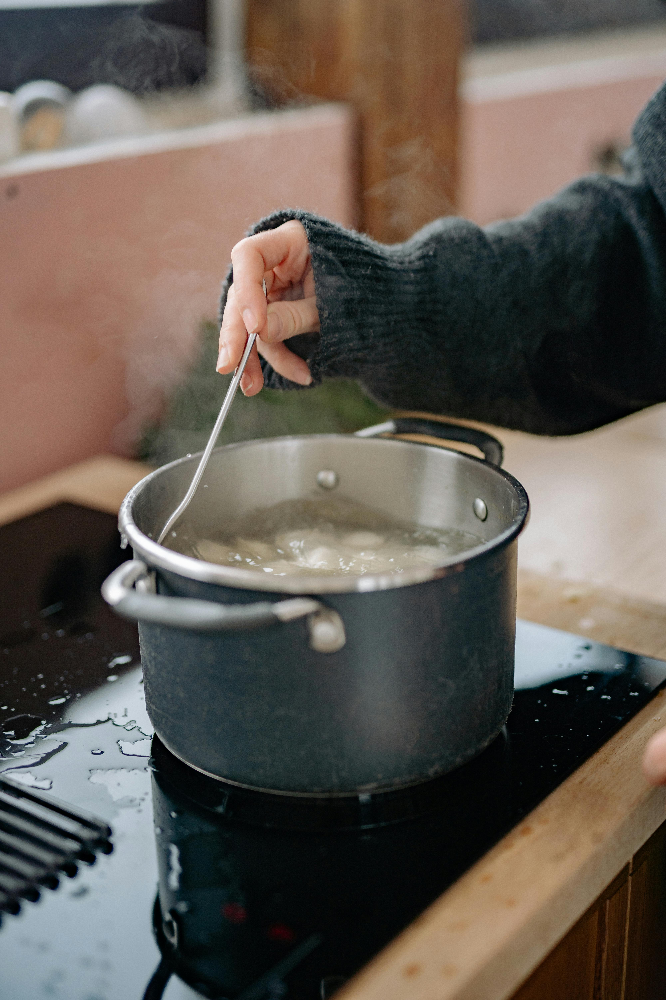
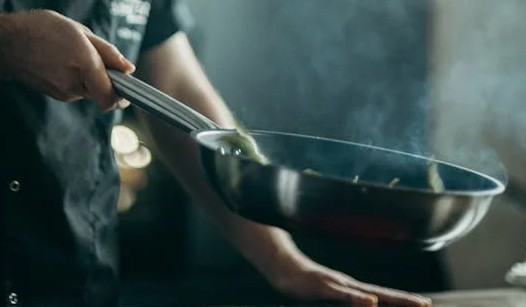

Ukrainian Traditional Borscht
Borscht is the perfect cold-weather soup — it’s rich, earthy, and has just the right amount of sour. I love borscht’s deep ruby-red color, rib-sticking heartiness, and the fact that it’s full of vegetables, which feels like a win come wintertime.
Borscht is endlessly riffable. Plus, it’s a great way to use up the vegetables you have on hand. Because the beets and red cabbage will stain any other vegetables you add a bright red, they’ll end up blending in seamlessly (just watch out for your shirt and kitchen towels!). So if your memories of borscht consist of the sickly sweet jarred variety, you owe it to yourself to give the homemade variety a chance.
For the broth

- 1½-2 litres of water
- 400-500 g beef on the bone
For frying

- 2 small beetroot
- 1 medium carrot
- 3 medium onions
- 4-5 tablespoons of vegetable oil
- A pinch of citric acid, a little table vinegar or ½ a lemon
- 2 tablespoons of tomato paste
For Borscht
- 300 g fresh white cabbage
- 4 medium potatoes
- Salt one teaspoon
- 1-2 dried bay leaves
- 2 tablespoons of herbs
- 1 garlic clove - Optional
- A pinch of ground black pepper - Optional
Cooking Method
1. Preparing the Broth
- Pour cold water into a saucepan, place the meat in it and put it on a medium heat. The broth will taste better if you use meat on the bone.
- Keep an eye on the broth, skim off the foam before boiling.
- When the liquid boils, cover the pot with a lid and cook over low heat for an hour and a half.
2. Preparing the stir-fry
- Wash and peel the beetroot, carrot and onion. Grate the beetroot on a coarse grater and the carrot on a medium grater. Cut the onion into small cubes.
- Pour oil into a frying pan, turn on medium heat. Fry the onions and carrots, stirring, for about 5 minutes.
- Then put the beetroot in. Add citric acid, vinegar or lemon juice. This will make the borscht really red and give it a pleasant sourness.
- Cook the roast for a further 5 minutes. Then add the tomato paste, stir and leave on the heat for another 5-7 minutes.
Finish the Borscht
- When the broth has boiled, remove the meat from the broth. While it cools down, pour the shredded cabbage into the pot. After 5-10 minutes, add potatoes cut into straws or cubes.
- You can change the order in which the vegetables are put in. If the cabbage is young, it is better to add it after the potatoes. Or at the same time, if your potatoes boil quickly.
- While the potatoes are boiling, separate the meat from the bone and cut into cubes. Return it to the soup. Salt to taste.
- Add the stir-fry and stir to combine.
- Throw in the bay leaf and finely chopped herbs. Cover the pot with a lid and simmer for another 5-7 minutes.
- For flavour, you can add some crushed garlic, ground cloves or black pepper to the pot. Leave the borscht under the lid to infuse for 5-10 minutes.
How to Serve Borscht
Borscht can be eaten immediately after cooking. But, as a rule, it tastes even better the next day.
Add sour cream and fresh herbs to a plate. If you prefer it a little more mild, add a slice of lemon.
Serve borscht with rye bread or muffins rubbed with garlic. Lard and pampushki will also complement the dish perfectly.


.jpg)